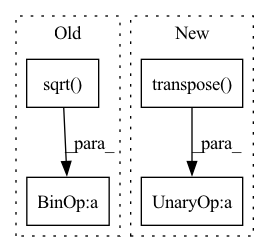

Pattern ID :7676
Before Change
src_embedding = src_embedding + src_embedding_p
tgt_embedding = tgt_embedding + tgt_embedding_p
scores = torch.matmul(src_embedding.transpose(2, 1).contiguous(), tgt_embedding) / math.sqrt( self.emb_dims)
scores = torch.softmax(scores, dim=2)
// b x points x points
feat1_corr = torch.matmul(feat2, scores.transpose(2, 1).contiguous())
rotation_ab, translation_ab = self.head(feat1, feat1_corr)After Change
rotation_ba, translation_ba = self.head(tgt_embedding, src_embedding, tgt, src)
else:
rotation_ba = rotation_ab.transpose( 2, 1) .contiguous()
translation_ba = -torch.matmul(rotation_ba, translation_ab.unsqueeze(2)).squeeze(2)
T_12 = rt_to_transformation(rotation_ab, translation_ab.unsqueeze(2))
if T_gt == None:In pattern: SUPERPATTERN
Frequency: 4
Non-data size: 4
Instances Fragment ID: 25434293
Project Name: paul007pl/mvp_benchmark
Commit Name: cb5622fec6ad947b57a83033563a402533978c61
Time: 2021-07-12
Author: panliang_de2007@qq.com
File Name: registration/models/dcp.py
M Class Name: Model
N Class Name: Model
M Method Name: forward(5)
N Method Name: forward(5)
M Parent Class: nn.Module
N Parent Class: nn.Module
M File Name: registration/models/dcp.py
N File Name: registration/models/dcp.py
M Start Line: 270
M End Line: 294
N Start Line: 394
N End Line: 425
Before Change
key_dim = make_divisible(cc * key_dim, divisor=8) // num_heads // regard as key_dim_ratio
else:
key_dim = cc // num_heads // Default value
qk_scale = float(1.0 / tf.math.sqrt( tf.cast(key_dim, "float32")) )
out_shape = cc if out_shape is None else out_shape
emb_dim = num_heads * key_dim
kv_kernel = block_size + halo_size * 2After Change
// print(f">>>> {attn_query.shape = }, {key.shape = }, {value.shape = }, {kv_inp.shape = }, {pos_query.shape = }, {num_heads = }")
// attention_scores = [batch, num_heads, hh, ww, query_block * query_block, kv_kernel * kv_kernel]
// attention_scores = layers.Lambda(lambda xx: functional.matmul(xx[0], xx[1], transpose_b=True))([attn_query, key])
attention_scores = attn_query @ functional.transpose( key, [0, 1, 2, 3, 5, 4])
// pos = [batch, num_heads * hh * ww, query_block, query_block, kv_kernel, kv_kernel]
pos = RelativePositionalEmbedding(position_height=kv_kernel, name=name and name + "pos_emb")(pos_query)
// print(f">>>> {pos.shape = }, {attention_scores.shape = }")
pos = functional.reshape(pos, [-1, *attention_scores.shape[1:]])
attention_scores = layers.Add()([attention_scores, pos])
// attention_scores = tf.nn.softmax(attention_scores, axis=-1)
attention_scores = layers.Softmax(axis=-1, name=name and name + "attention_scores")(attention_scores)
if attn_dropout > 0:
attention_scores = layers.Dropout(attn_dropout, name=name and name + "attn_drop")(attention_scores)
// attention_output = [batch, num_heads, hh, ww, query_block * query_block, out_dim]
// attention_output = layers.Lambda(lambda xx: functional.matmul(xx[0], xx[1]))([attention_scores, value])
attention_output = attention_scores @ value
// attention_output = rearrange(attention_output, "B hd h w (hb wb) c -> B (h hb) (w wb) (hd c)", hb=query_block, wb=query_block)
_, heads, hh_aa, ww_aa, patch, cc_aa = attention_output.shape
attention_output = functional.reshape(attention_output, [-1, heads, hh_aa, ww_aa, query_block, query_block, cc_aa]) Fragment ID: 25434294
Project Name: leondgarse/keras_cv_attention_models
Commit Name: e05e233f369a1d58f912872b1581a80d15cacc3f
Time: 2023-02-07
Author: leondgarse@gmail.com
File Name: keras_cv_attention_models/halonet/halonet.py
M Class Name: AnonimousClass
N Class Name: AnonimousClass
M Method Name: halo_attention(11)
N Method Name: halo_attention(11)
M Parent Class:
N Parent Class:
M File Name: keras_cv_attention_models/halonet/halonet.py
N File Name: keras_cv_attention_models/halonet/halonet.py
M Start Line: 23
M End Line: 98
N Start Line: 28
N End Line: 106
Before Change
matmul_qk = tf.matmul(q, k, transpose_b=True) // (..., seq_len_q, seq_len_k)
// scale matmul_qk
dk = tf.cast(tf.shape(k)[-1], q.dtype)
scaled_attention_logits = matmul_qk / tf.math.sqrt( dk)
// add the mask to the scaled tensor.
if mask is not None:
scaled_attention_logits += (tf.cast(mask, dtype=q.dtype) * -1e9)
// softmax is normalized on the last axis (seq_len_k) so that the scoresAfter Change
) -> Tuple[tf.Tensor, tf.Tensor]:
Scaled Dot-Product Attention
scores = tf.matmul(query, tf.transpose( key, perm=[0, 1, 3, 2]) ) / math.sqrt(query.shape[-1])
if mask is not None:
scores = tf.where(mask == 0, -1e9, scores)
p_attn = tf.nn.softmax(scores, axis=-1) Fragment ID: 25434305
Project Name: mindee/doctr
Commit Name: 9530f81d15395006b4844299236bdadba11c1dde
Time: 2022-07-01
Author: felixdittrich92@gmail.com
File Name: doctr/models/recognition/transformer/tensorflow.py
M Class Name: AnonimousClass
N Class Name: AnonimousClass
M Method Name: scaled_dot_product_attention(4)
N Method Name: scaled_dot_product_attention(4)
M Parent Class:
N Parent Class:
M File Name: doctr/models/recognition/transformer/tensorflow.py
N File Name: doctr/models/recognition/transformer/tensorflow.py
M Start Line: 88
M End Line: 99
N Start Line: 63
N End Line: 67
Before Change
imgRep = np.matmul(P, objPts_w_ex.T).T
imgRep[:, 0] = imgRep[:, 0] / imgRep[:, 2]
imgRep[:, 1] = imgRep[:, 1] / imgRep[:, 2]
error = np.sqrt( (imgPts[:, 0] - imgRep[:, 0].reshape((self.n, 1))) ** 2 + (
imgPts[:, 1] - imgRep[:, 1].reshape((self.n, 1))) ** 2)
error = np.sum(error, axis=0) / self.n
return error[0]
After Change
// concat 1 to the last column of objPts_w
objPts_w_ex = torch.cat((objPts_w, torch.ones_like(objPts_w[:, :, :1])), dim=-1)
// Calculate the image points
imgRep = torch.bmm(P, objPts_w_ex.transpose(dim0=-1, dim1=-2) ).transpose(dim0=-1, dim1=-2)
// Normalize the image points
imgRep = imgRep[:, :, :2] / imgRep[:, :, 2:]
error = torch.linalg.norm(imgRep - imgPts, dim=-1)
error = torch.sum(error, dim=-1)
return error Fragment ID: 25434303
Project Name: pypose/pypose
Commit Name: f93c59c3ad352fe90aa3072311a7ca67fa442243
Time: 2023-02-25
Author: zitongz3@illinois.edu
File Name: pypose/module/pnp.py
M Class Name: EPnP
N Class Name: EPnP
M Method Name: reprojection_error(5)
N Method Name: reprojection_error(4)
M Parent Class:
N Parent Class:
M File Name: pypose/module/pnp.py
N File Name: pypose/module/pnp.py
M Start Line: 456
M End Line: 466
N Start Line: 469
N End Line: 492